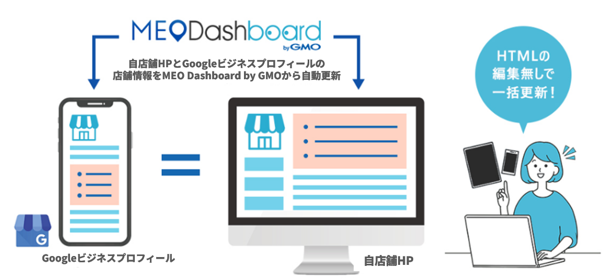
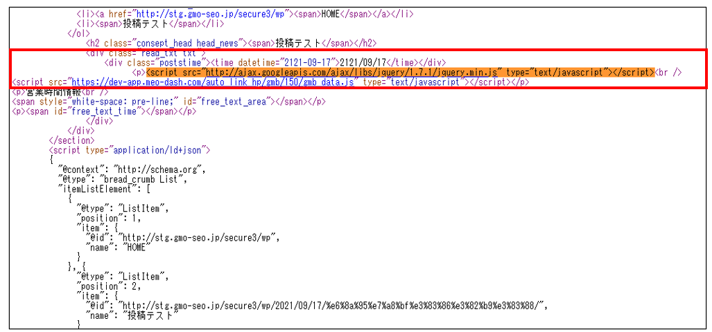
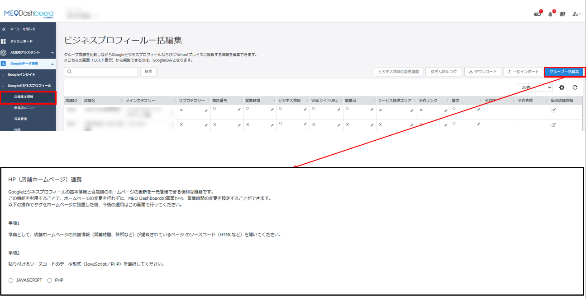
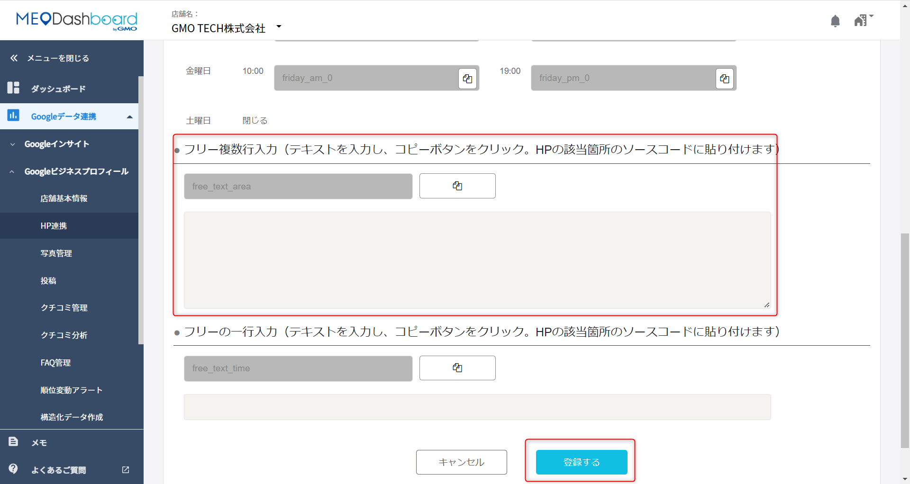
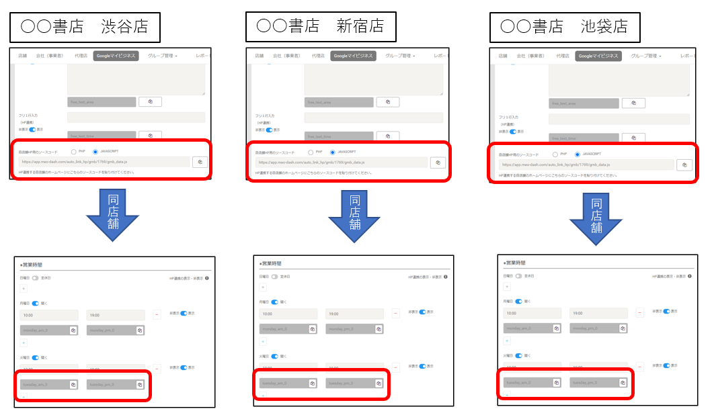
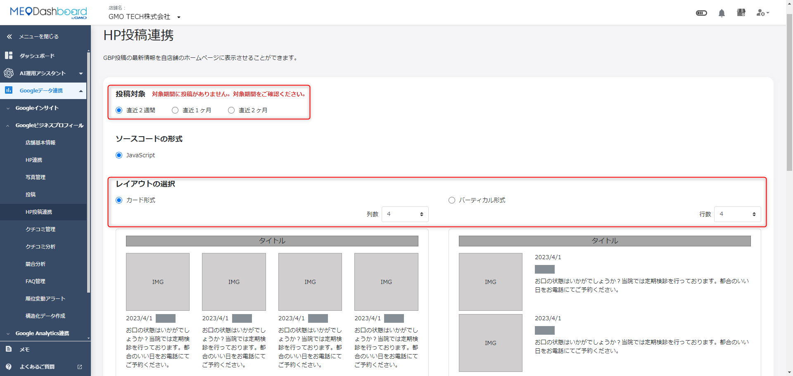
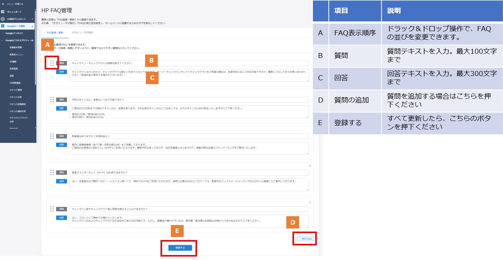
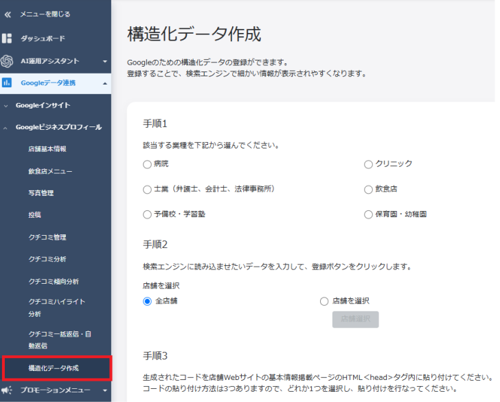
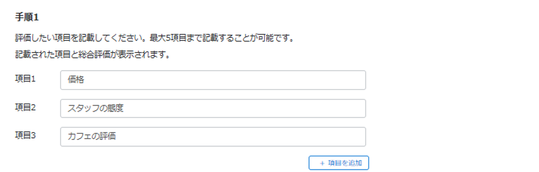
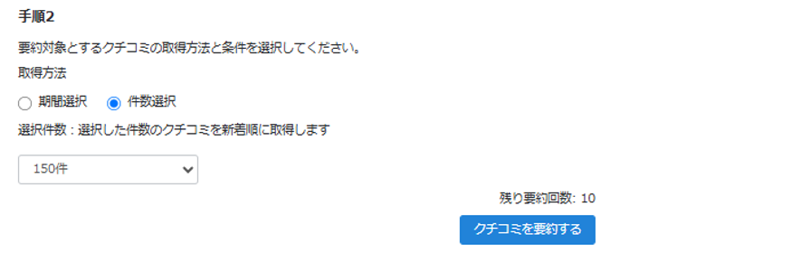

FoodLuck MEO 操作説明書 13
WEBサイト最適化機能
HP連携、HP投稿連携、HP FAQ、構造化データ、クチコミ評価要約を正しく使うための現場マニュアル
| この資料の目的 WEBサイト最適化機能は、FoodLuck MEOで管理している店舗情報や投稿、FAQ、クチコミ要約などを自社HPへ表示しやすくする機能です。HTMLタグの設置が関わるため、飲食店の現場では『どの情報がHPに出るのか』『変更時に誰へ依頼するのか』を理解することが大切です。 |
|---|
| 触る人の分担 HPのソースコード、headタグ、bodyタグ、JavaScript、PHPの設置は、原則としてFoodLuck側またはHP制作会社側で対応する項目です。店舗側で直接編集すると、連携タグが消えたり、HP表示が崩れたりする可能性があります。 |
|---|
1. WEBサイト最適化機能でできること
このカテゴリの機能は、GoogleビジネスプロフィールやFoodLuck MEOに登録した情報を、自社ホームページにも活かすためのものです。Googleだけでなく、公式HPを見たお客様にも営業時間、投稿、FAQ、クチコミ要約などを分かりやすく見せられます。
| 機能 | できること | 飲食店での使い方 | 注意点 |
|---|---|---|---|
| HP連携 | 店舗情報や営業時間をHPに表示し、FoodLuck MEO側の更新をHPへ反映する | 営業時間や住所をGoogleとHPで揃える | HPへタグ設置が必要 |
| HP投稿連携 | Google投稿の最新情報やイベントをHPに表示する | キャンペーンやお知らせをHPにも出す | 反映は深夜バッチ後、翌日目安 |
| HP FAQ管理 | HPに表示するFAQをFoodLuck MEO側で管理する | 予約、支払い、席、駐車場などのよくある質問を整える | デザインとタグ発行が必要 |
| 構造化データ作成 | 検索エンジンが店舗情報を理解しやすいコードを作る | 公式HPのSEO補助として使う | HTMLのhead内に設置 |
| クチコミ評価要約 | Googleクチコミを要約し、HPに表示する | 第三者の声をHP上で見せる | 良い口コミだけを選ぶ機能ではない |
FAQ画像: HP連携機能のイメージ

- FoodLuck MEOで更新した店舗情報を、GoogleビジネスプロフィールだけでなくHPにも反映するイメージです。
- HPにあらかじめタグを設置しておくことで、HTMLを毎回編集せずに情報更新しやすくなります。
2. 店舗側とFoodLuck側の役割分担
| 作業 | 主な担当 | 理由 |
|---|---|---|
| HPにタグを設置する | FoodLuck側・HP制作会社側 | HTMLやソースコードの編集が必要 |
| 営業時間や住所を修正する | 店舗側またはFoodLuck側 | FoodLuck MEO上の店舗基本情報を正しく更新する |
| HP表示がおかしい時の確認 | FoodLuck側・HP制作会社側 | タグ、HP側の構造、外部環境の確認が必要 |
| 投稿やFAQの内容を考える | 店舗側 | お客様に伝えたい内容は現場が一番分かる |
| 構造化データやクチコミ要約タグをHPに貼る | FoodLuck側・HP制作会社側 | head/bodyなど設置場所の判断が必要 |
| 店舗側でやらないほうがよいこと HPのソースコードを直接編集すると、初期設定で設置した連携タグが消える可能性があります。営業時間や住所を変える場合は、FoodLuck MEO側で変更し、登録ボタンまで押したうえで反映を確認してください。 |
|---|
3. HP連携を使う
HP連携は、FoodLuck MEOで管理している店舗情報をHPにも表示するための機能です。多店舗で営業時間変更がある場合、GoogleとHPを別々に直す手間を減らせます。
- HPの店舗情報、営業時間、住所などが掲載されているページを確認する。
- HTMLファイルを編集する前に、必ずバックアップを取る。
- FoodLuck MEOで、個店またはグループのHP連携タグを発行する。
- JavaScriptまたはPHPを選び、コピーする。
- HPのソースコード内、基本タグは</body>の前に設置する。
- 営業時間を連携する場合は、曜日ごとの営業時間タグをHP内の該当箇所に設置する。
- 設置後、HP上で表示が崩れていないか、店舗情報が正しく出ているか確認する。
FAQ画像: 個店のHP連携タグ設置イメージ

- 自店舗HP用のソースコードを、HP内の指定箇所へ設置します。
- 開始と終わりの記号やタグは削除しないようにします。
FAQ画像: グループのHP連携タグ設置画面

- グループ画面では、複数店舗をまとめてHP連携するためのタグを発行します。
- グループの一括変更で反映する情報と、店舗個別で反映する情報を分けて考えます。
| 情報変更時の注意 タグ設置後に営業時間や住所などを変える場合は、HPのソースコードではなくFoodLuck MEO側で変更します。変更後は必ず登録ボタンを押してください。 |
|---|
FAQ画像: フリー複数行入力

- HPだけに表示したい補足文を入れる場合に使います。
- Googleビジネスプロフィールとは連動せず、HPにタグを設置した箇所のみに反映されます。
4. グループ連携と店舗別ページの注意
多店舗でHP連携を使う場合、グループ一括で表示するのか、店舗ごとのページにそれぞれ表示するのかで、設置するタグと更新方法が変わります。
| ケース | 考え方 | 注意点 |
|---|---|---|
| 全店舗一覧ページにまとめて出す | グループ用タグを設置する | グループ管理ページからの変更がHPに反映される |
| 店舗ごとのページに別々に出す | 各店舗ごとのタグを該当店舗ページへ設置する | A店ページにB店タグを貼らない |
| 一部店舗だけ営業時間を変える | 店舗個別のタグ設置や店舗個別編集が必要 | グループ一括タグだけでは一部店舗変更に対応しにくい |
| グループを削除・作り直す | 新しいタグが生成される | HP側のタグ再設置が必要。古いタグは空白やエラーの原因になる |
| グループ店舗の内訳だけ変更する | タグの状態により更新が続く場合がある | 削除・解除前にFoodLuck側へ確認する |
FAQ画像: 特定店舗だけ変更がある場合

- 店舗ごとのページに情報がある場合は、各店舗のタグをそれぞれ設置します。
- 貼り付ける店舗名とHPページが一致しているか確認します。
| 削除・解除は慎重に HP連携後にグループ化を解除・削除して作り直すと、新しいタグが生成され、HP側の再設置が必要になります。頻繁なURL変更や構造変更はSEO上も不利になる可能性があるため、削除前にFoodLuck側へ相談してください。 |
|---|
5. HP投稿連携を使う
HP投稿連携は、Googleビジネスプロフィールに投稿した最新情報やイベント情報を、店舗HPにも表示する機能です。Google投稿をHPにも見せたいときに使います。
- 左メニューで「Googleデータ連携」>「Googleビジネスプロフィール」>「HP投稿連携」を開く。
- 投稿対象で、直近2週間、直近1ヶ月、直近2ヶ月など表示期間を選ぶ。
- レイアウトをカード形式またはバーティカル形式から選ぶ。
- 列数・行数を選ぶ。投稿数が少ない場合、スペースに空きが出ることがある。
- 必要に応じてタイトル指定、色、フォントサイズを設定する。
- デザインイメージを確認し、問題なければ「発行する」を押す。
- 発行されたタグを、HPの表示したい場所のソースコードへ設置する。
FAQ画像: HP投稿連携の設定画面

- 投稿対象、レイアウト、列数・行数、色、フォントサイズを設定します。
- 投稿数が表示枠より少ない場合は空きが出るため、店舗の投稿頻度に合わせて設定します。
| 反映タイミング HP投稿連携は1日1回、深夜1時頃にバッチ処理が行われます。たとえば1日に投稿した内容は、2日の深夜処理後に反映される想定です。すぐ反映されない場合があります。 |
|---|
6. HP FAQ管理を使う
HP FAQ管理では、ホームページに表示するFAQをFoodLuck MEO側で一元管理できます。飲食店では、予約、支払い、席、子連れ、駐車場、アレルギー対応など、お客様からよく聞かれる質問を整えると問い合わせ削減につながります。
- 「Googleデータ連携」>「Googleビジネスプロフィール」>「HP FAQ管理」を開く。
- 質問と回答を入力する。
- 必要に応じて質問を追加する。
- 表示順をドラッグで調整する。
- 入力が終わったら「登録する」を押す。
- 「デザイン・タグ発行」タブでデザインを選ぶ。
- テキストカラーやフォントサイズを調整し、「発行する」を押してタグを発行する。
- 発行されたタグをHPへ設置する。
FAQ画像: HP FAQ管理画面

- 質問は最大100文字、回答は最大300文字まで入力できます。
- 表示順を変えたい場合はドラッグで並び替えます。
- 登録後、デザイン・タグ発行でHP表示用のタグを発行します。
| 飲食店向けFAQ例 『予約は必要ですか』『個室はありますか』『子ども連れでも利用できますか』『アレルギー対応はできますか』『駐車場はありますか』など、来店前の不安を減らす質問を優先します。 |
|---|
7. 構造化データを作成する
構造化データは、検索エンジンがHP内の店舗情報を理解しやすくするためのコードです。お客様に直接見える文章ではありませんが、HPの情報を検索エンジンへ伝える補助として使います。
- 左メニューで「Googleデータ連携」>「Googleビジネスプロフィール」>「構造化データ作成」を開く。
- 該当する業種を選ぶ。飲食店の場合は飲食店を選択する。
- 入力フォームの内容を確認する。
- 個店の場合はページ下部の「登録する」を押してコードを生成する。
- グループの場合は対象店舗を選び、コード生成方法を選んで登録する。
- 生成されたコードを、店舗Webサイトの基本情報掲載ページのHTML headタグ内に貼り付ける。
FAQ画像: 構造化データ作成画面

- 業種、対象店舗、生成方法を選んで構造化データを作成します。
- 生成したコードはHPのhead内へ設置します。店舗側で直接編集せず、FoodLuck側またはHP制作会社に依頼してください。
| グループ作成時の注意 グループで作成する場合、業種や生成方法は店舗ごとに個別設定できません。すでに個店で方法2を使って構造化データを設定している場合、グループでも方法2を使うと上書きされる場合があります。 |
|---|
8. クチコミ評価要約をHPに表示する
クチコミ評価要約は、Googleビジネスプロフィールに投稿されたクチコミを要約し、ホームページへ表示する機能です。第三者の声をHPに出せる一方で、良いクチコミだけを選んで表示する機能ではありません。
- 評価したい項目を最大5項目まで入力する。項目を入れない場合は総合評価のみ表示される。
- 対象クチコミの取得方法を、期間選択または件数選択から選ぶ。
- 期間選択は6ヶ月から3年、件数選択は最新50件から200件まで50件刻みで選ぶ。
- 「クチコミを要約する」を押し、右側の表示サンプルを確認する。
- タイトル、説明文、背景色、フォントサイズなどのデザインを調整する。
- 問題なければ「発行する」を押す。
- 発行されたスクリプトタグをHPのbodyタグ内に設置する。
- 必要に応じて、自動更新をONにする。
FAQ画像: 評価項目の入力

- 価格、スタッフの態度、カフェの評価など、評価したい項目を設定できます。
- 飲食店では料理、接客、雰囲気、価格、提供スピードなどが候補になります。
FAQ画像: クチコミ評価要約のデザイン設定

- 要約文の見た目や表示内容を調整し、発行することでHP表示用タグが作成されます。
- 『クチコミを要約する』だけでは反映されません。必ず発行する操作が必要です。
| 重要な注意 要約は月10回まで実行できます。発行せずにページ移動や更新をすると、要約回数だけ消費されて保存されません。また、悪いクチコミが多い場合は低い評価として要約されます。良い口コミだけを取得して要約することはできません。 |
|---|
| GTMについて クチコミ評価要約はGoogle Tag Managerで設置できない仕様です。HPのbodyタグ内に直接設置する必要があります。 |
|---|
9. よくある困りごと
| 困りごと | 確認すること | 対応 |
|---|---|---|
| HPに情報が反映されない | タグが消えていないか、設置場所が合っているか | FoodLuck側またはHP制作会社へ確認する |
| 営業時間を一部店舗だけ変えたい | グループ一括タグか、店舗別タグか | 店舗ごとにタグ設置や個別編集が必要な場合がある |
| グループを削除したらHPが空白/エラーになった | HP側に古いタグが残っていないか | 古いタグを削除し、新しいタグを設置する |
| HP投稿がすぐ出ない | 深夜1時頃のバッチ処理前かどうか | 翌日以降に反映確認する |
| FAQがHPに出ない | 登録済みか、デザイン・タグ発行済みか | 登録とタグ設置の両方を確認する |
| クチコミ要約が保存されない | 発行するボタンを押したか | 要約後に必ず発行する |
| 構造化データが不安 | head内に正しく設置したか | 制作会社へ設置確認を依頼する |
10. 飲食店の月次チェックリスト
□ HP上の営業時間、住所、電話番号がFoodLuck MEOの情報と一致しているか確認した。
□ Google投稿を行った内容が、翌日以降HPにも表示されているか確認した。
□ HPのFAQに、現在の予約・支払い・席・駐車場ルールが反映されているか見直した。
□ クチコミ評価要約の内容が店舗の実態とかけ離れていないか確認した。
□ HP表示がおかしい場合、店舗側でHTMLを触らずFoodLuck側へ共有した。
□ グループや店舗構成を変える前に、HP連携タグへの影響を確認した。
| 運用の考え方 WEBサイト最適化機能は、店舗のHPを『更新されない古いページ』にしないための仕組みです。GoogleとHPで営業時間や投稿内容がズレるとお客様の不信感につながるため、月1回だけでも表示確認をしてください。 |
|---|
11. この資料に反映したFAQ記事
WEBサイト最適化機能カテゴリ配下のFAQ記事を、HP連携、グループ運用、HP投稿連携、HP FAQ、構造化データ、クチコミ評価要約に分けて反映しています。
| No. | FAQ記事 | 反映先 |
|---|---|---|
| 1 | HP連携後、グループ化している一部の店舗でHP上の営業時間を変更したいのですが、MEOdashboard上で変更は可能でしょうか | 4. グループ注意 |
| 2 | HP FAQ管理機能 | 6. HP FAQ |
| 3 | HP投稿連携について | 5. HP投稿連携 |
| 4 | HP連携後、グループピングしたグループそのものを削除した場合 | 4. グループ注意 |
| 5 | HP連携後にグループ化を解除/削除するデメリット | 4. グループ注意 |
| 6 | HP連携後に情報変更を行う方法 | 3. 変更時注意 |
| 7 | HP連携機能について | 1・3. HP連携 |
| 8 | HP連携機能の、「フリー複数行入力」の活用方法 | 3. HP連携 |
| 9 | 【グループ】HP連携する際のタグ設置場所について | 4. グループ注意 |
| 10 | 【グループ】HP連携をしていて特定の店舗のみ変更することがある場合について | 4. グループ注意 |
| 11 | 【グループ】HP連携機能を利用してグルーピングのタグをHPに設置したら、 各店舗ごとの情報修正は可能かどうかについて | 4. グループ注意 |
| 12 | 【グループ】構造化データ作成について | 4. グループ注意 |
| 13 | 【個店】HP連携する際のタグ設置場所について | 本文各章 |
| 14 | クチコミ評価要約の設定方法 | 8. クチコミ評価要約 |
| 15 | クチコミ評価要約機能の概要 | 8. クチコミ評価要約 |
| 16 | グループでHP連携のタグを生成した後に、グループの店舗の変更をした場合 | 4. グループ注意 |
| 17 | グループ詳細にあるタグからHP連携設定を行った場合の情報の編集方法 | 4. グループ注意 |
| 18 | 店舗情報が各々のページに記載がある場合のHP連携方法 | 4. 店舗別ページ |
| 19 | 構造化データ作成について | 7. 構造化データ |